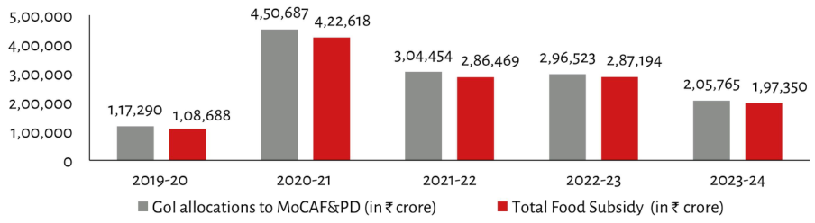

| Fiscal Year | GoI allocations to MoCAF&PD (in ₹ crore) | Total Food Subsidy (in ₹ crore) | | :--- | :--- | :--- | | 2019-20 | 1,17,290 | 1,08,688 | | 2020-21 | 4,50,687 | 4,22,618 | | 2021-22 | 3,04,454 | 2,86,469 | | 2022-23 | 2,96,523 | 2,87,194 | | 2023-24 | 2,05,765 | 1,97,350 |
